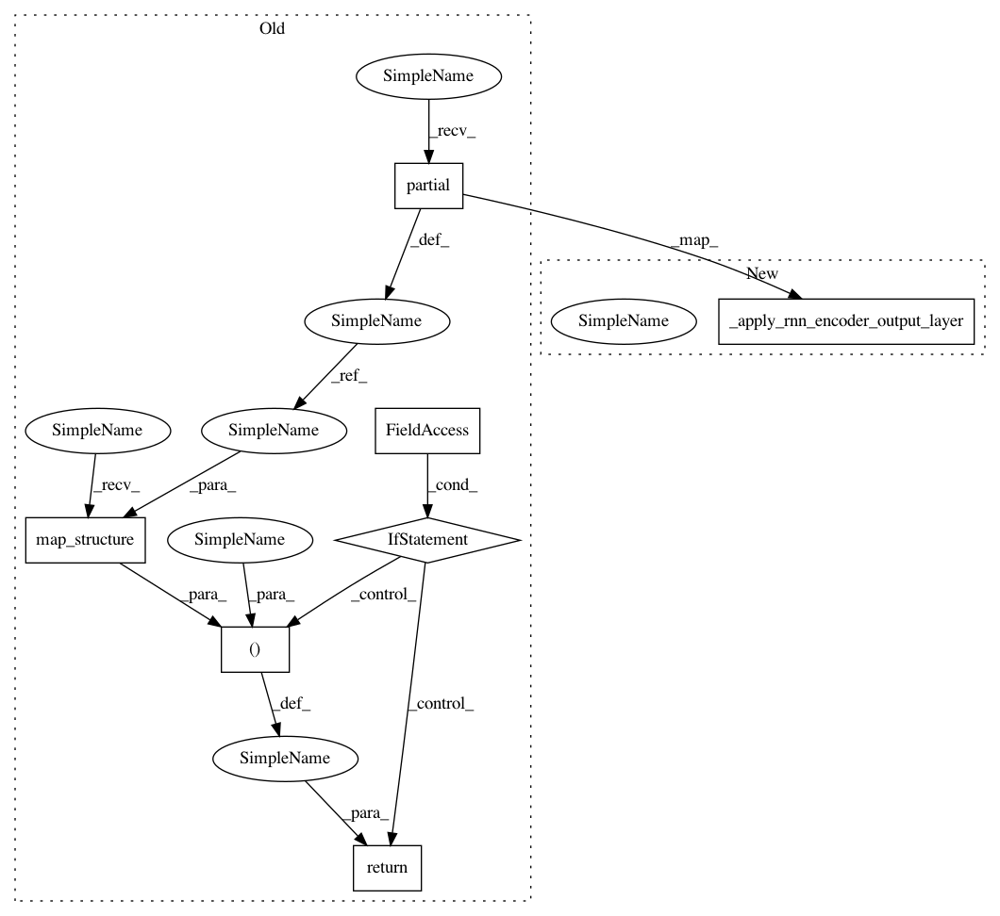

3497526703e85981f39b643e923dcb1e40eec366,texar/modules/encoders/rnn_encoders.py,BidirectionalRNNEncoder,_build,#BidirectionalRNNEncoder#,712
Before Change
time_major=time_major,
**kwargs)
map_func_fw = functools.partial(
_forward_output_layers,
output_layer=self._output_layer_fw,
time_major=time_major,
hparams=self._hparams.output_layer_fw,
mode=mode)
outputs_fw = nest.map_structure(map_func_fw, cell_outputs[0])
hparams_output_layer_bw = self._hparams.output_layer_bw
if self._hparams.output_layer_share_config:
hparams_output_layer_bw = self._hparams.output_layer_fw
map_func_bw = functools.partial(
_forward_output_layers,
output_layer=self._output_layer_bw,
time_major=time_major,
hparams=hparams_output_layer_bw,
mode=mode)
outputs_bw = nest.map_structure(map_func_bw, cell_outputs[1])
outputs = (outputs_fw, outputs_bw)
if not self._built:
self._add_internal_trainable_variables()
// Add trainable variables of cells and output layers
// which may be constructed externally.
self._add_trainable_variable(
layers.get_rnn_cell_trainable_variables(self._cell_fw))
self._add_trainable_variable(
layers.get_rnn_cell_trainable_variables(self._cell_bw))
if self._output_layer_fw and \
not isinstance(self._output_layer_fw, (list, tuple)):
self._add_trainable_variable(
self._output_layer_fw.trainable_variables)
if self._output_layer_bw and \
not isinstance(self._output_layer_bw, (list, tuple)):
self._add_trainable_variable(
self._output_layer_bw.trainable_variables)
self._built = True
if return_cell_output:
return outputs, output_states, cell_outputs
else:
return outputs, output_states
@staticmethod
def concat_outputs(outputs):
Concats the outputs of the bidirectional encoder into a single
tensor.
After Change
time_major=time_major,
**kwargs)
outputs_fw, output_size_fw = _apply_rnn_encoder_output_layer(
self._output_layer_fw, time_major, self._output_layer_hparams_fw,
mode, cell_outputs[0], self._cell_fw.output_size)
outputs_bw, output_size_bw = _apply_rnn_encoder_output_layer(
self._output_layer_bw, time_major, self._output_layer_hparams_bw,
mode, cell_outputs[1], self._cell_bw.output_size)
In pattern: SUPERPATTERN
Frequency: 3
Non-data size: 7
Instances
Project Name: asyml/texar
Commit Name: 3497526703e85981f39b643e923dcb1e40eec366
Time: 2018-06-04
Author: zhitinghu@gmail.com
File Name: texar/modules/encoders/rnn_encoders.py
Class Name: BidirectionalRNNEncoder
Method Name: _build
Project Name: asyml/texar
Commit Name: 3497526703e85981f39b643e923dcb1e40eec366
Time: 2018-06-04
Author: zhitinghu@gmail.com
File Name: texar/modules/encoders/rnn_encoders.py
Class Name: UnidirectionalRNNEncoder
Method Name: _build
Project Name: asyml/texar
Commit Name: 3497526703e85981f39b643e923dcb1e40eec366
Time: 2018-06-04
Author: zhitinghu@gmail.com
File Name: texar/modules/encoders/rnn_encoders.py
Class Name: BidirectionalRNNEncoder
Method Name: _build